| subject | n |
|---|---|
| Math | 395 |
| Portuguese | 649 |
Analyse exploratoire de la réussite scolaire
Étude comparative : Mathématiques vs Langue Portugaise
1 Introduction
1.1 Contexte de l’étude
Ce document présente une analyse descriptive et exploratoire (EDA) de la réussite scolaire à partir des données de Cortez & Silva (2008). Deux jeux de données sont étudiés en parallèle, correspondant à deux disciplines : Mathématiques et Langue portugaise.
L’objectif est de mieux comprendre (i) les caractéristiques des élèves et de leur environnement, (ii) les distributions des notes finales (G3), et (iii) les associations descriptives entre variables socio‑démographiques, comportementales et scolaires.
1.2 Objectifs de l’analyse
Les objectifs principaux sont :
- Décrire les effectifs et profils des élèves (âge, sexe, contexte familial).
- Comparer la performance finale (G3) entre Math et Portugais (distributions, statistiques résumées).
- Explorer des associations descriptives entre variables et G3 (corrélations, comparaisons de groupes).
- Mettre en évidence des différences de profils / associations entre les deux disciplines.
1.3 Méthodologie
L’analyse repose sur des méthodes descriptives et exploratoires en R, incluant :
dplyr/tidyrpour la manipulation et le nettoyage des données.ggplot2pour la visualisation.forcatspour la gestion des variables catégorielles.corrplotpour la représentation des matrices de corrélation.
1.3.1 Contraintes (cahier des charges)
- Pas de modélisation prédictive (pas de ML, pas de régression).
1.4 Hypothèses explicites (EDA)
Les hypothèses ci-dessous servent de fil conducteur et seront évaluées de manière exploratoire (sans inférence causale) :
- H1 (Différence de performance) : la distribution de G3 diffère entre Mathématiques et Portugais.
- H2 (Rôle de l’assiduité) : un niveau d’absences plus élevé est associé à une performance plus faible (relation descriptive).
- H3 (Comportements et performance) : des variables comportementales (ex. consommation d’alcool, sorties) présentent une association descriptive avec G3.
- H4 (Hétérogénéité) : ces associations peuvent varier selon le contexte scolaire (school) et/ou le sexe.
2 Données et préparation
2.1 Chargement des fichiers
2.2 Inspection rapide
[1] "school" "sex" "age" "address" "famsize"
[6] "Pstatus" "Medu" "Fedu" "Mjob" "Fjob"
[11] "reason" "guardian" "traveltime" "studytime" "failures"
[16] "schoolsup" "famsup" "paid" "activities" "nursery"
[21] "higher" "internet" "romantic" "famrel" "freetime"
[26] "goout" "Dalc" "Walc" "health" "absences"
[31] "G3" "subject" Rows: 1,044
Columns: 32
$ school <chr> "GP", "GP", "GP", "GP", "GP", "GP", "GP", "GP", "GP", "GP",…
$ sex <chr> "F", "F", "F", "F", "F", "M", "M", "F", "M", "M", "F", "F",…
$ age <int> 18, 17, 15, 15, 16, 16, 16, 17, 15, 15, 15, 15, 15, 15, 15,…
$ address <chr> "U", "U", "U", "U", "U", "U", "U", "U", "U", "U", "U", "U",…
$ famsize <chr> "GT3", "GT3", "LE3", "GT3", "GT3", "LE3", "LE3", "GT3", "LE…
$ Pstatus <chr> "A", "T", "T", "T", "T", "T", "T", "A", "A", "T", "T", "T",…
$ Medu <int> 4, 1, 1, 4, 3, 4, 2, 4, 3, 3, 4, 2, 4, 4, 2, 4, 4, 3, 3, 4,…
$ Fedu <int> 4, 1, 1, 2, 3, 3, 2, 4, 2, 4, 4, 1, 4, 3, 2, 4, 4, 3, 2, 3,…
$ Mjob <chr> "at_home", "at_home", "at_home", "health", "other", "servic…
$ Fjob <chr> "teacher", "other", "other", "services", "other", "other", …
$ reason <chr> "course", "course", "other", "home", "home", "reputation", …
$ guardian <chr> "mother", "father", "mother", "mother", "father", "mother",…
$ traveltime <int> 2, 1, 1, 1, 1, 1, 1, 2, 1, 1, 1, 3, 1, 2, 1, 1, 1, 3, 1, 1,…
$ studytime <int> 2, 2, 2, 3, 2, 2, 2, 2, 2, 2, 2, 3, 1, 2, 3, 1, 3, 2, 1, 1,…
$ failures <int> 0, 0, 3, 0, 0, 0, 0, 0, 0, 0, 0, 0, 0, 0, 0, 0, 0, 0, 3, 0,…
$ schoolsup <chr> "yes", "no", "yes", "no", "no", "no", "no", "yes", "no", "n…
$ famsup <chr> "no", "yes", "no", "yes", "yes", "yes", "no", "yes", "yes",…
$ paid <chr> "no", "no", "yes", "yes", "yes", "yes", "no", "no", "yes", …
$ activities <chr> "no", "no", "no", "yes", "no", "yes", "no", "no", "no", "ye…
$ nursery <chr> "yes", "no", "yes", "yes", "yes", "yes", "yes", "yes", "yes…
$ higher <chr> "yes", "yes", "yes", "yes", "yes", "yes", "yes", "yes", "ye…
$ internet <chr> "no", "yes", "yes", "yes", "no", "yes", "yes", "no", "yes",…
$ romantic <chr> "no", "no", "no", "yes", "no", "no", "no", "no", "no", "no"…
$ famrel <int> 4, 5, 4, 3, 4, 5, 4, 4, 4, 5, 3, 5, 4, 5, 4, 4, 3, 5, 5, 3,…
$ freetime <int> 3, 3, 3, 2, 3, 4, 4, 1, 2, 5, 3, 2, 3, 4, 5, 4, 2, 3, 5, 1,…
$ goout <int> 4, 3, 2, 2, 2, 2, 4, 4, 2, 1, 3, 2, 3, 3, 2, 4, 3, 2, 5, 3,…
$ Dalc <int> 1, 1, 2, 1, 1, 1, 1, 1, 1, 1, 1, 1, 1, 1, 1, 1, 1, 1, 2, 1,…
$ Walc <int> 1, 1, 3, 1, 2, 2, 1, 1, 1, 1, 2, 1, 3, 2, 1, 2, 2, 1, 4, 3,…
$ health <int> 3, 3, 3, 5, 5, 5, 3, 1, 1, 5, 2, 4, 5, 3, 3, 2, 2, 4, 5, 5,…
$ absences <int> 6, 4, 10, 2, 4, 10, 0, 6, 0, 0, 0, 4, 2, 2, 0, 4, 6, 4, 16,…
$ G3 <int> 6, 6, 10, 15, 10, 15, 11, 6, 19, 15, 9, 12, 14, 11, 16, 14,…
$ subject <fct> Math, Math, Math, Math, Math, Math, Math, Math, Math, Math,…2.3 Dictionnaire des variables (description des colonnes)
Les définitions ci-dessous s’appliquent aux deux fichiers (Math et Portugais). Les trois notes G1, G2, G3 sont propres à la matière.
| Variable | Description | Type / valeurs |
|---|---|---|
| school | École | binaire: GP (Gabriel Pereira) / MS (Mousinho da Silveira) |
| sex | Sexe | binaire: F / M |
| age | Âge | numérique: 15 à 22 |
| address | Type d’adresse | binaire: U (urbain) / R (rural) |
| famsize | Taille de la famille | binaire: LE3 (≤3) / GT3 (>3) |
| Pstatus | Cohabitation des parents | binaire: T (ensemble) / A (séparés) |
| Medu | Éducation de la mère | numérique: 0 aucun; 1 primaire; 2 5e–9e; 3 secondaire; 4 supérieur |
| Fedu | Éducation du père | numérique: 0 aucun; 1 primaire; 2 5e–9e; 3 secondaire; 4 supérieur |
| Mjob | Profession de la mère | nominal: teacher / health / services / at_home / other |
| Fjob | Profession du père | nominal: teacher / health / services / at_home / other |
| reason | Raison du choix de l’école | nominal: home / reputation / course / other |
| guardian | Tuteur légal | nominal: mother / father / other |
| traveltime | Temps de trajet domicile-école | numérique: 1 <15 min; 2 15–30; 3 30–60; 4 >1h |
| studytime | Temps d’étude hebdomadaire | numérique: 1 <2h; 2 2–5h; 3 5–10h; 4 >10h |
| failures | Échecs scolaires passés | numérique: 0–3 (valeur 4 si ≥4 dans certaines versions) |
| schoolsup | Soutien scolaire supplémentaire | binaire: yes / no |
| famsup | Soutien éducatif familial | binaire: yes / no |
| paid | Cours particuliers payants (matière) | binaire: yes / no |
| activities | Activités extrascolaires | binaire: yes / no |
| nursery | A fréquenté une maternelle | binaire: yes / no |
| higher | Souhaite faire des études supérieures | binaire: yes / no |
| internet | Accès Internet à la maison | binaire: yes / no |
| romantic | En relation amoureuse | binaire: yes / no |
| famrel | Qualité des relations familiales | numérique: 1 (très mauvaise) à 5 (excellente) |
| freetime | Temps libre après l’école | numérique: 1 (très faible) à 5 (très élevé) |
| goout | Sorties avec les amis | numérique: 1 (très faible) à 5 (très élevé) |
| Dalc | Alcool en semaine | numérique: 1 (très faible) à 5 (très élevé) |
| Walc | Alcool le week-end | numérique: 1 (très faible) à 5 (très élevé) |
| health | État de santé actuel | numérique: 1 (très mauvais) à 5 (très bon) |
| absences | Nombre d’absences | numérique: 0 à 93 |
| G1 | Note 1er trimestre | numérique: 0 à 20 |
| G2 | Note 2e trimestre | numérique: 0 à 20 |
| G3 | Note finale | numérique: 0 à 20 |
2.4 Préparation
2.5 Valeurs manquantes (aperçu)
| variable | n_missing |
|---|
3 Analyse descriptive (Math vs Portuguese)
3.1 Profil démographique
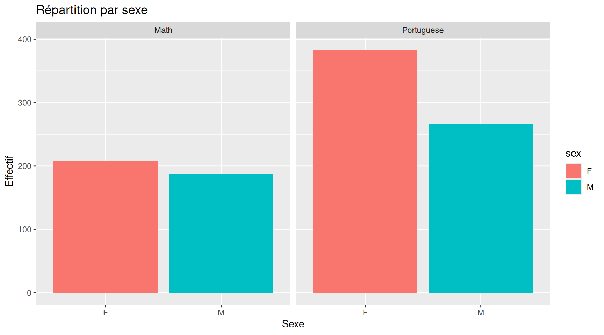
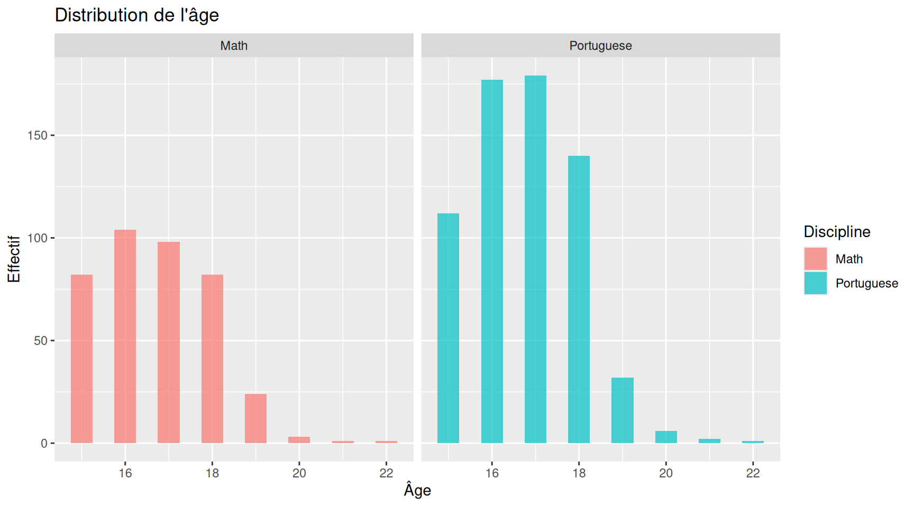
3.2 Performance académique (G3)
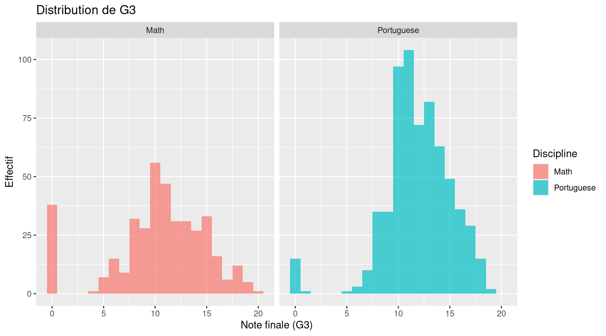
| subject | n | moyenne | sd | mediane | taux_reussite |
|---|---|---|---|---|---|
| Math | 395 | 10.42 | 4.58 | 11 | 0.67 |
| Portuguese | 649 | 11.91 | 3.23 | 12 | 0.85 |
3.3 Comparaisons quantitatives (Math vs Portugais)
Cette section propose des comparaisons quantitatives entre disciplines. Les tests statistiques ci-dessous sont rapportés à titre exploratoire (sensibles aux hypothèses et à la multiplicité) et doivent être interprétés avec prudence.
| Variable | Moyenne Math | Moyenne Por | Diff. moyennes | Médiane Math | Médiane Por | Diff. médianes | Cohen d | d (IC95%) bas | d (IC95%) haut | p (Wilcoxon) |
|---|---|---|---|---|---|---|---|---|---|---|
| G3 | 10.415 | 11.906 | -1.491 | 11.0 | 12.0 | -1 | -0.392 | -0.523 | -0.256 | 0.000 |
| age | 16.696 | 16.744 | -0.048 | 17.0 | 17.0 | 0 | -0.039 | -0.163 | 0.083 | 0.469 |
| absences | 5.709 | 3.659 | 2.049 | 4.0 | 2.0 | 2 | 0.334 | 0.219 | 0.452 | 0.000 |
| failures | 0.334 | 0.222 | 0.112 | 0.0 | 0.0 | 0 | 0.172 | 0.046 | 0.305 | 0.015 |
| alcohol_index | 1.886 | 1.891 | -0.005 | 1.5 | 1.5 | 0 | -0.005 | -0.126 | 0.119 | 0.924 |
| parent_edu | 2.957 | 2.715 | 0.242 | 3.0 | 3.0 | 0 | 0.229 | 0.103 | 0.359 | 0.000 |
| studytime_num | 2.035 | 1.931 | 0.105 | 2.0 | 2.0 | 0 | 0.126 | 0.002 | 0.250 | 0.041 |
| traveltime_num | 1.448 | 1.569 | -0.120 | 1.0 | 1.0 | 0 | -0.165 | -0.283 | -0.045 | 0.005 |
3.4 Comparaisons par groupes (descriptif)
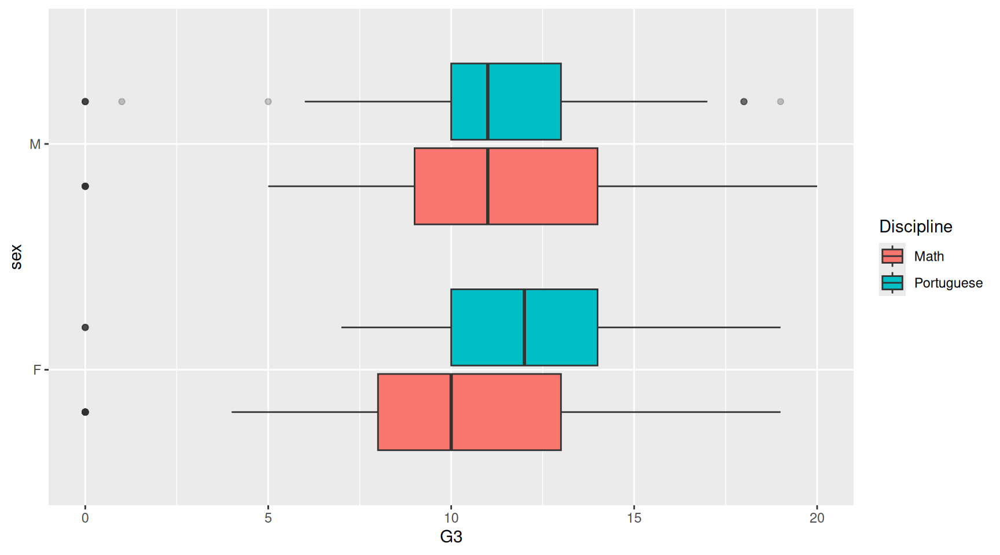
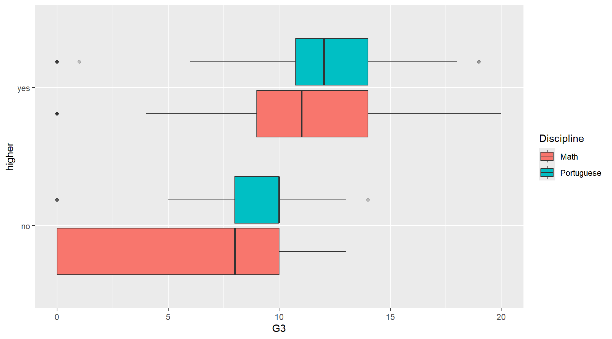
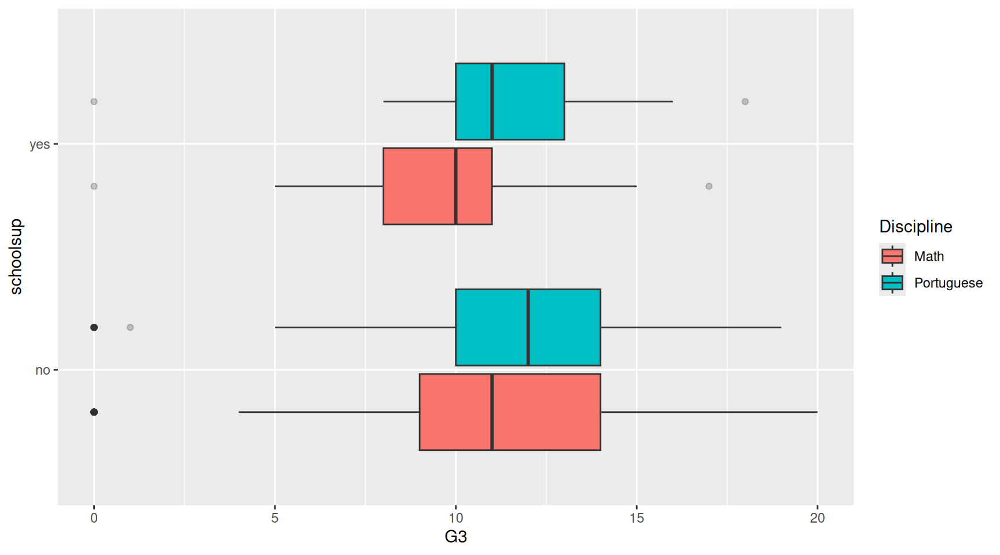
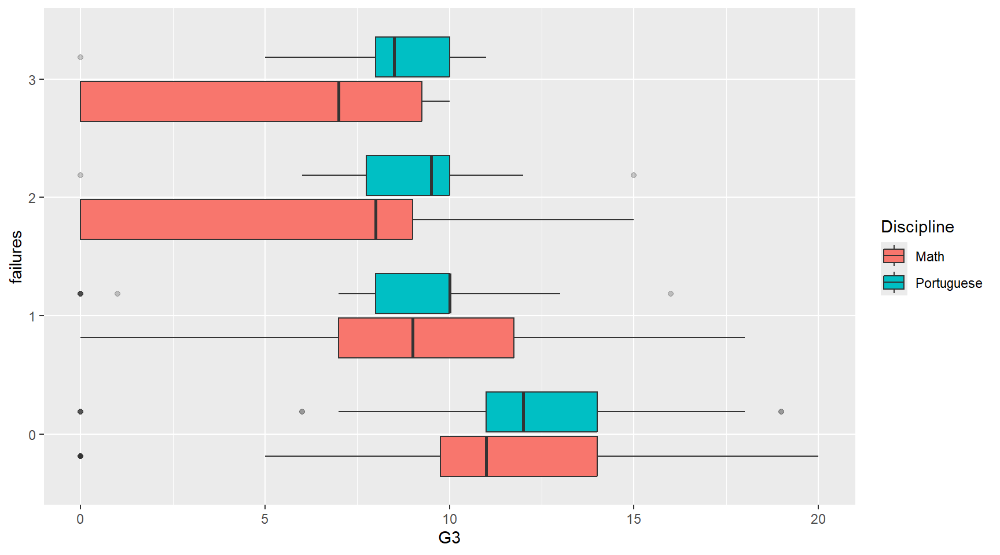
4 Corrélations
Les corrélations ci-dessous sont descriptives (Spearman).
| variable | rho |
|---|---|
| failures | -0.41 |
| parent_edu | 0.24 |
| Medu | 0.24 |
| Fedu | 0.19 |
| Dalc | -0.17 |
| alcohol_index | -0.17 |
| Walc | -0.15 |
| age | -0.11 |
| absences | -0.11 |
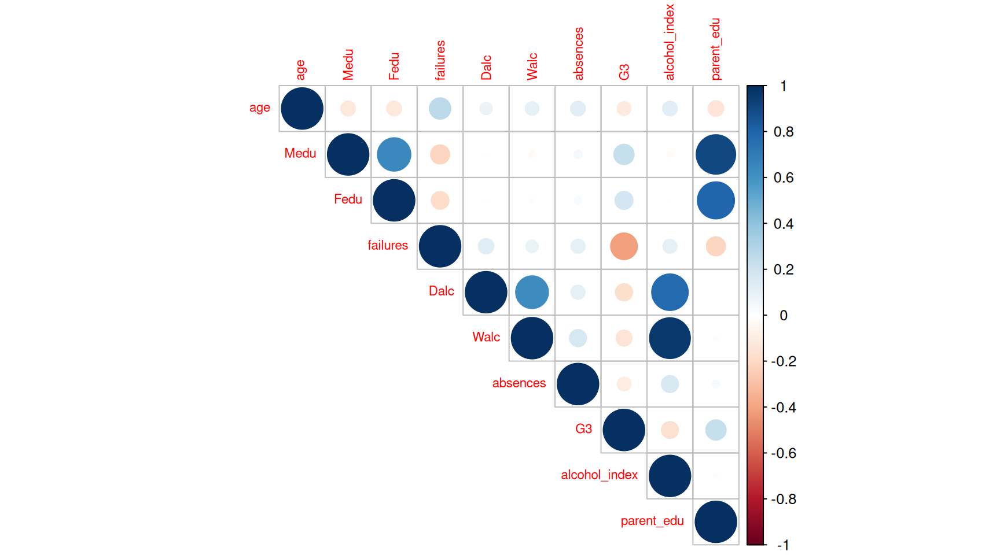
4.1 Exemple ciblé : consommation d’alcool et performance
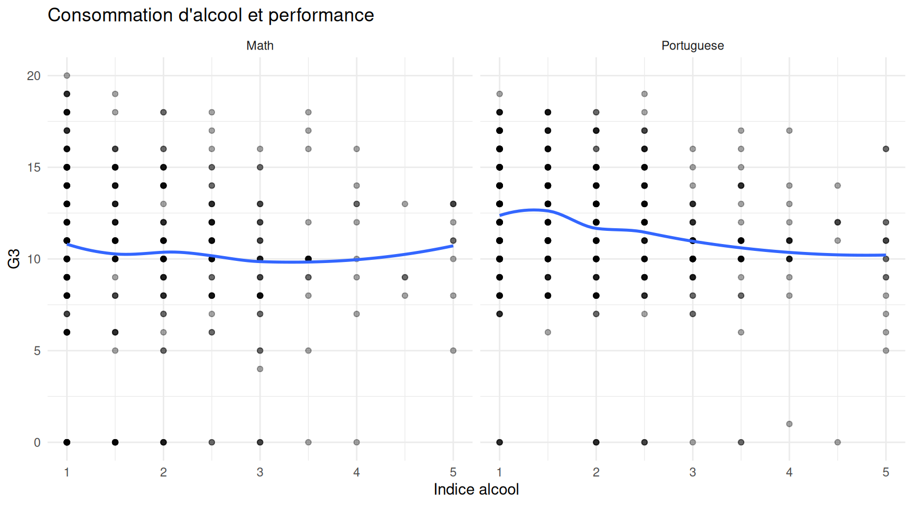
5 Analyse multivariée exploratoire (ACP)
L’ACP (analyse en composantes principales) permet de résumer la structure multivariée des variables numériques. Elle est réalisée sur des variables standardisées.
5.1 Variance expliquée
| Composante | Variance expliquée | Variance cumulée |
|---|---|---|
| PC1 | 22.6% | 22.6% |
| PC2 | 11.9% | 34.4% |
| PC3 | 9.4% | 43.8% |
| PC4 | 8.2% | 52.1% |
| PC5 | 7.7% | 59.8% |
| PC6 | 6.9% | 66.7% |
5.2 Projection des individus (PC1–PC2)
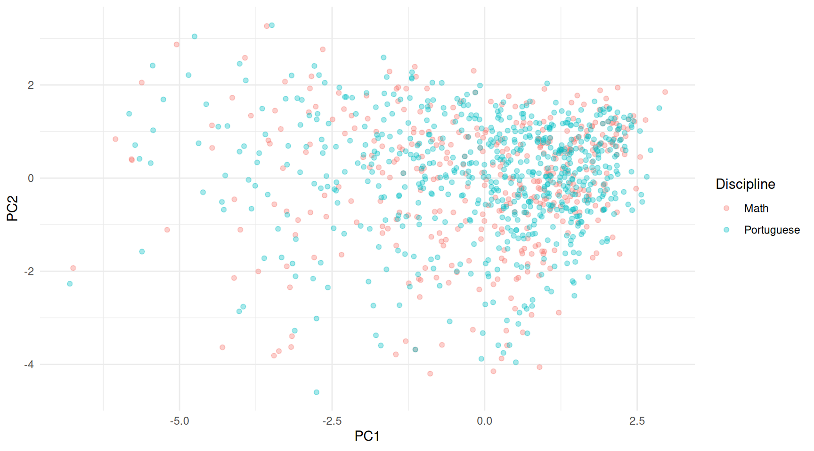
5.3 Charges des variables (lecture des axes)
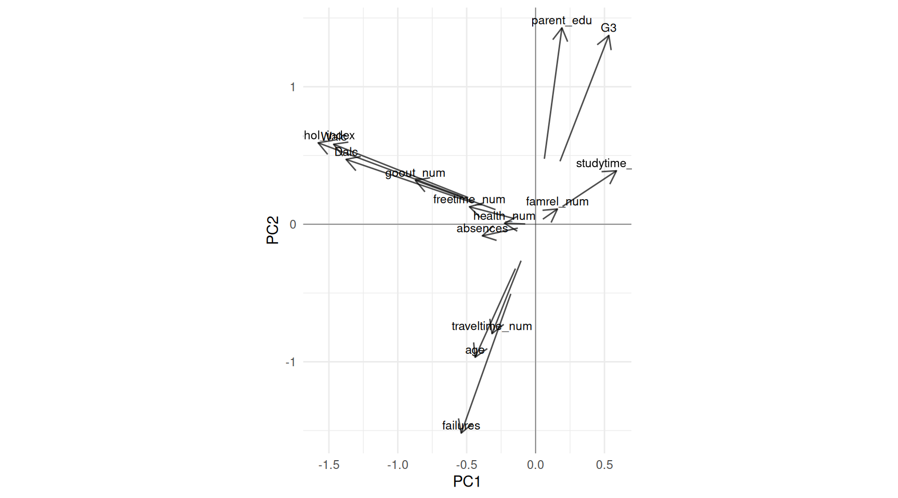
5.4 Visualisation conjointe (optionnel) : facettes par école et stratification par sexe

6 Discussion méthodologique (réflexive)
Cette section explicite des choix méthodologiques et des précautions d’interprétation.
- Nature des variables : plusieurs variables sont ordinales (échelles 1–5). Dans certains tableaux/ACP, elles sont transformées en valeurs numériques pour l’exploration, ce qui impose une interprétation prudente.
- Comparaisons Math vs Portugais : les deux disciplines correspondent à deux échantillons distincts. Les comparaisons sont donc inter‑groupes (non appariées) et ne capturent pas des évolutions individuelles.
- Mesures d’association : l’usage de Spearman est adapté à des relations monotones et à des variables ordinales, mais ne décrit pas nécessairement des relations non monotones.
- Multiplicité : les tests/p‑values (lorsqu’ils sont reportés) sont exploratoires ; un contrôle formel (ex. FDR) pourrait être discuté si l’on multiplie les comparaisons.
- ACP : l’ACP suppose une structure linéaire et utilise une standardisation ; elle sert surtout à visualiser des directions de variation communes et des regroupements potentiels.
- Causalité : aucune association observée ne doit être interprétée comme causale en l’absence d’un design adapté.
7 Conclusion
7.1 Synthèse des résultats principaux
Cette section synthétise les principaux constats descriptifs de l’analyse (aucune interprétation causale).
7.1.1 1) Échantillon et population
- Volume total : 1044 observations (Math : 395, Portugais : 649).
- Âge : médiane 17 ans (min 15, max 22).
7.1.2 2) Performance finale (G3)
| Discipline | n | G3 min | G3 médiane | G3 moyenne | G3 sd | Taux réussite (G3≥10) |
|---|---|---|---|---|---|---|
| Math | 395 | 0 | 11 | 10.42 | 4.58 | 67.1% |
| Portuguese | 649 | 0 | 12 | 11.91 | 3.23 | 84.6% |
7.1.3 3) Variables le plus associées à G3 (descriptif)
Les variables ci-dessous ont les plus fortes corrélations (Spearman) avec G3.
| Variable | Corrélation Spearman (rho) |
|---|---|
| failures | -0.41 |
| parent_edu | 0.24 |
| Medu | 0.24 |
| Fedu | 0.19 |
| Dalc | -0.17 |
| alcohol_index | -0.17 |
| Walc | -0.15 |
| age | -0.11 |
7.2 Implications pratiques
7.2.1 Pour les acteurs éducatifs
- Les distributions et comparaisons (par discipline et par groupes) aident à repérer des écarts de performance et des profils potentiellement plus à risque, sans conclure à une causalité.
- Les associations descriptives mettent en évidence des dimensions sur lesquelles l’établissement peut orienter des actions de prévention (ex. absentéisme, organisation du travail, climat familial) si elles sont confirmées par des analyses complémentaires.
7.2.2 Pour la gestion et le pilotage
- Les indicateurs synthétiques par discipline (médiane/moyenne, taux de réussite) peuvent servir de base de suivi d’une cohorte ou d’un établissement.
- Les résultats encouragent une lecture différenciée selon la matière (Math vs Portugais), car les distributions et associations peuvent diverger.
7.3 Limites de l’étude
- Analyse descriptive : absence d’inférence causale et absence de modélisation prédictive (choix volontaire).
- Données partiellement auto‑déclarées (comportements), donc exposées à un biais de déclaration.
- Contexte spécifique (deux écoles, période et région données) : généralisation limitée.
- Variables et codages : certaines variables sont ordinales et sont parfois traitées comme numériques pour l’EDA (à interpréter avec prudence).
7.4 Perspectives et recommandations
7.4.1 Analyses futures (sans ML/régression)
- Analyses stratifiées : répéter les corrélations et comparaisons par discipline et par école.
- Robustesse : comparer Spearman vs Kendall, vérifier l’effet des valeurs extrêmes (winsorisation/sensibilité).
- Données manquantes : approfondir la structure des valeurs manquantes et ses conséquences descriptives.
7.4.2 Amélioration des données
- Standardiser les libellés/codages (dictionnaire + contrôles de cohérence à l’import).
- Enrichir (si disponible) avec des variables contextuelles (ex. indicateurs socio‑économiques, classe, enseignant) pour une lecture plus complète.
7.5 Conclusion finale
Cette analyse exploratoire fournit une comparaison structurée de la réussite scolaire en Mathématiques et en Langue portugaise, et met à disposition des tableaux/visualisations reproductibles pour discuter des tendances observées, tout en respectant les contraintes méthodologiques (EDA uniquement).
Date de l’analyse : 2026-01-06
Outils : R 4.3.3, Quarto, packages tidyverse, corrplot, knitr.
8 Annexes
8.1 Code et reproductibilité
Le code complet est accessible en dépliant les blocs (boutons “Code” et “Show code” dans la page HTML).
9 Références
Cortez, P., & Silva, A. (2008). Using Data Mining to Predict Secondary School Student Performance. IJCSI.